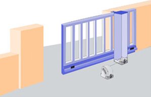
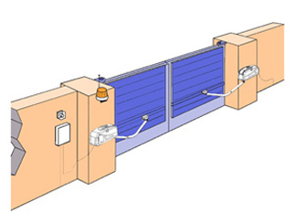
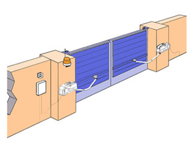
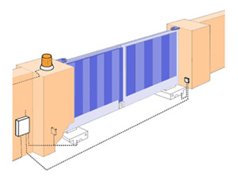
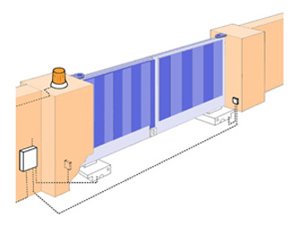

DISTRAL : le rêve aluminium
Le confort en toute sécurité. Les motorisations proposées par DISTRAL ne sont pas qu'un simple élément de confort, ce sont avant tout des produits qui vous apportent tous les gages de sécurité et de fiabilité que vous pouvez en attendre.

Le système coulissant à crémaillère POTEAU INTEGRAL :
Innovation DISTRAL
fruit de notre savoir-faire et de la maîtrise de notre outil industriel
Le moteur est incorporé dans le poteau de guidage.
Innovation DISTRAL
fruit de notre savoir-faire et de la maîtrise de notre outil industriel
Le moteur est incorporé dans le poteau de guidage.
Les avantages :
- Rapide et fonctionnel : Chaque moteur arrive pré-cablé à son tableau de commande, une économie de temps et de travail.
- Une installation facile : Le moteur inclus dans le poteau de guidage du portail est livré préréglé. Le réglage des crémaillères est supprimé.
- Déverrouillage extérieur de serie : Chaque portail doit normalement comporter un système manuel de déverrouillage en cas de panne d'électricité. Le POTEAU INTEGRAL est doté d'un système de déverrouillage extérieur manuel en série, aucune intervention interne sur le poteau n'est nécessaire.
- Un guidage intelligent : Les éléments de guidage du portail sont réglables et inclus dans le poteau.
- Conçu pour durer : L'unité de commande est montée dans le poteau, ce qui garantit une meilleure protection par rapport aux éléments extérieurs et intempéries.
Le système à bras : Facile à installer ne nécessite aucune préparation particulière, s'adapte à tous types de portails battants,ce système est celui qui se rapproche le plus de l'ouverture manuelle. Son principe est celui d'un moteur par battant qui agit sur un axe faisant tourner un bras articulé.


Le système enterré : Ce système nécessite préalablement des réservations de maçonnerie au pied des piliers. Robuste et très puissant conçu pour des portails très lourds.

